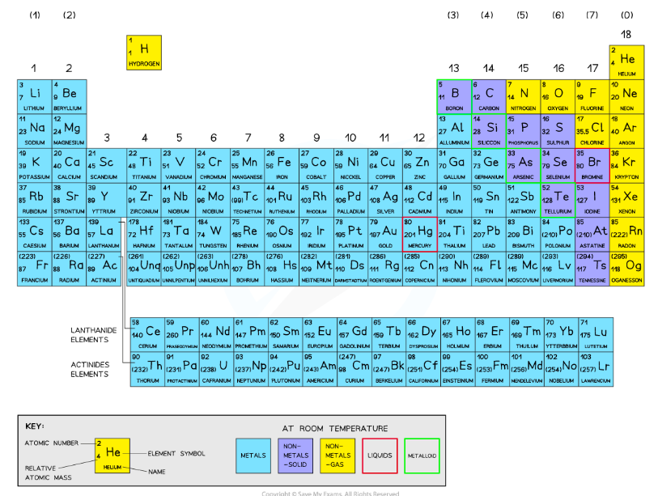
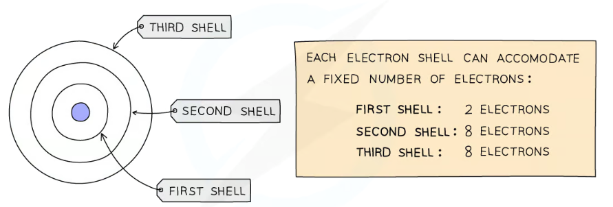

Mendeleev's Table vs the Modern Periodic Table
| Feature | Mendeleev's Table (1869) | Modern Periodic Table |
|---|
| Ordered by | Increasing atomic mass (only data available) | Increasing atomic number (proton count) |
| Gaps | Yes — gaps left for undiscovered elements | No gaps — all 118 elements found and placed |
| Noble gases | Not included — not yet discovered (1869) | Included as Group 0 on the far right |
| Order anomalies | Some pairs swapped (e.g. Te and I) to match chemistry | None — atomic number order always agrees with chemistry |
| Number of elements | ~60 known at the time | 118 confirmed elements |
Most common exam error: Saying Mendeleev used "atomic number" — he used atomic mass. Atomic number was not discovered until Rutherford (c. 1917). For a "state one difference" question, the safest answer is ordering by atomic mass vs atomic number.
Layout of the Modern Periodic Table

The Modern Periodic Table — ordered by atomic number
Key rules:
➤ Period number = number of occupied electron shells (horizontal rows)
➤ Group number = number of outer-shell electrons (vertical columns, Groups 1–7)
➤ Elements in the same group have similar chemical properties — same number of outer electrons
➤ Ordered by increasing atomic number (proton number)
Group tells you: how many outer electrons → controls reactivity and bonding
Period tells you: how many shells are occupied
Example: Silicon (Si, Z=14, config 2.8.4) → Period 3 (3 shells), Group 4 (4 outer electrons)
Exam error (June 2019): Confusing "group" and "period". Always state both: "silicon is in group 4 and period 3."
Electronic Configurations of the First 20 Elements
| Element | Z | Config | Period | Group |
|---|
| Hydrogen (H) | 1 | 1 | 1 | 1 |
| Helium (He) | 2 | 2 | 1 | 0 |
| Lithium (Li) | 3 | 2.1 | 2 | 1 |
| Beryllium (Be) | 4 | 2.2 | 2 | 2 |
| Boron (B) | 5 | 2.3 | 2 | 3 |
| Carbon (C) | 6 | 2.4 | 2 | 4 |
| Nitrogen (N) | 7 | 2.5 | 2 | 5 |
| Oxygen (O) | 8 | 2.6 | 2 | 6 |
| Fluorine (F) | 9 | 2.7 | 2 | 7 |
| Neon (Ne) | 10 | 2.8 | 2 | 0 |
| Element | Z | Config | Period | Group |
|---|
| Sodium (Na) | 11 | 2.8.1 | 3 | 1 |
| Magnesium (Mg) | 12 | 2.8.2 | 3 | 2 |
| Aluminium (Al) | 13 | 2.8.3 | 3 | 3 |
| Silicon (Si) | 14 | 2.8.4 | 3 | 4 |
| Phosphorus (P) | 15 | 2.8.5 | 3 | 5 |
| Sulfur (S) | 16 | 2.8.6 | 3 | 6 |
| Chlorine (Cl) | 17 | 2.8.7 | 3 | 7 |
| Argon (Ar) | 18 | 2.8.8 | 3 | 0 |
| Potassium (K) | 19 | 2.8.8.1 | 4 | 1 |
| Calcium (Ca) | 20 | 2.8.8.2 | 4 | 2 |
Electron Shells

Electron shell structure and capacities
[H] Explain how electronic configuration is related to position: "Calcium has four shells of electrons, so it is in period 4. It has two electrons in its outer shell, so it is in group 2." ⚠ Do NOT write "four outer shells" — atoms have only one outer shell (Nov 2020 examiner report).
Procedure to predict electron config: Find the atomic number (= total electrons). Fill shell 1 with up to 2, shell 2 with up to 8, shell 3 with up to 8, shell 4 starts after. Example: Cl (Z=17): 2 → 8 → 7 → config = 2.8.7 ✓ Check: 2+8+7 = 17 ✓